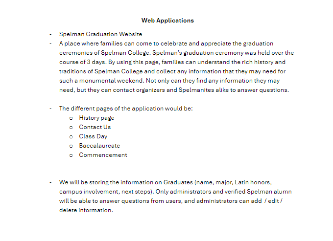

Assignments
Assignment 1 – Basic HTML

This assignment introduced the basics of HTML. It was a reminder on how to use different HTML tags in order to create content for a webpage. In the future, we will style this content to our satisfaction.
Assignment 2 – Basic CSS
We learned how to use CSS to style our HTML content. We worked on making the main page more fancy as well as styling our own webpage. This will get harder.
Assignment 3 - Page Layout

Assignment 3 was the creation of a simple web layout modeled off of what we were provided.
Recreate CSS Page Assignment

We recreated the University of South Carolina Swimming Team page. There are hover effects and almost all elements of the page redone using HTML and CSS.
Assignment 5 - Intro the Javascript
We implemented some simple Javascript to make the page interactive. Made a column effectively a button, as well as implemented a button to display an image, and implemented a reactive bar that updated depending on the position of the bar.
Assignment 6 - JS Assignment
For this assignment, I created a single-page site with two interactive features using JavaScript. One section lets users adjust how fast a bike moves across the screen, and the other lets them display simple art using only CSS. I also added a responsive menu that adapts to different screen sizes and includes a dropdown on smaller devices.
Assignment 7 - Loops
Used loops to build a simple animation of a stick figure exercising as well as display houses.
Assignment 8 - Javascript: Arrays
Used Arrays to display images and text describing the action the person in the images was performing.
Assignment 9 - Javascript: Classes
Used classes to display images of hot dogs with a pop up menu displaying ingredients.
Projects
Project 1 – Planning PDF
This project is a simple PDF document outlining my website idea centered around Spelman's graduation.
Project 2 – Spelman Graduation Wireframe

Wireframe of the website that I will be building centered around Spelman graduation.
Project 3 – Spelman Graduation HTML and CSS
Extremely rough draft of the HTML and CSS for the website I will be building centered around Spelman's Graduation
Project 4 – Spelman Graduation Website Filled In
Implemented HTML and CSS aspects of Project to give page readability, slight functionality, and a themed Spelman color scheme.
Node Setup
Link
Code
Project Pt. 5 - JSON List
The JSON list was implemented into the new Find Your Graduate page in order to display the list of graduates.
Project Pt. 6 - Contact Form
Changed the mockup Contact Us form on Contact Us page to a real form that sends an email from the user's email address.
Project Pt. 7 - React Page
Rebuilt entire page in React using components
Project Pt. 8 - Server-Side Integration
Rebuilt entire page in React using components
Project Pt. 9 - POST Json
Made it so that user can add a new graduate to the list.
Project Pt. 10 - PUT and DELETE
Made it so that user can edit graduates that are on the list.
Project Pt. 10 - PUT and DELETE
Had trouble with getting the graduates to display, but the fetch used to edit, delete and add graduates works.